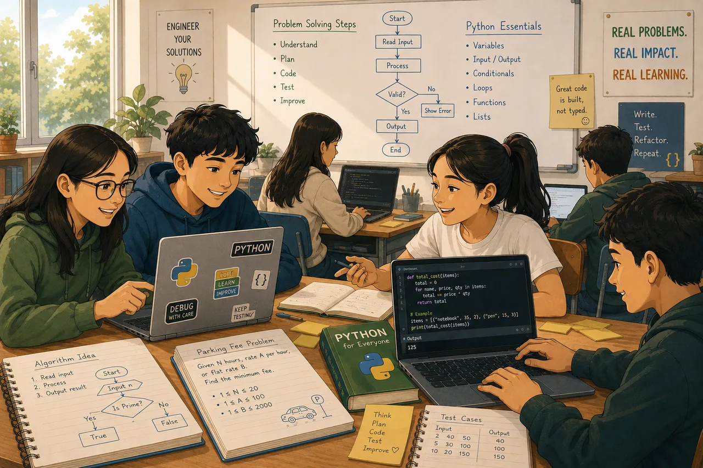

problem.md
The story, task, class spec, example, explanation, and hints — written for a Grade 9 reading level.
Every assessment is a small, well-engineered artifact — documented, tested, and openly shared. Here's exactly what that means.

Each practical is a complete package — so a teacher can use it, grade it, and adapt it with confidence.
problem.mdThe story, task, class spec, example, explanation, and hints — written for a Grade 9 reading level.
starter.pyScaffolded code with docstrings and TODOs — guiding students without removing the thinking.
solution.pyThe reference implementation: correct, readable, and understandable by a beginner.
tests.pyThe unittest suite — equal-weight, behavior-based, automatic grading.
teacher_notes.mdObjectives, common mistakes, difficulty, and pedagogical guidance.
metadata.ymlTitle, family, difficulty, estimated time, concepts — structured and machine-readable.
The curriculum follows how programmers actually grow — one achievable stage at a time.
Variables, I/O, arithmetic, conditionals, loops, functions.
Classes, objects, attributes, methods.
Lists of objects, searching, collaboration.
Inheritance, polymorphism, composition, design.
Searching, sorting, dictionaries, files.
Culminating projects that combine everything.
Clone the repository, run the unit tests, and grade automatically — or adapt any assessment to your context.